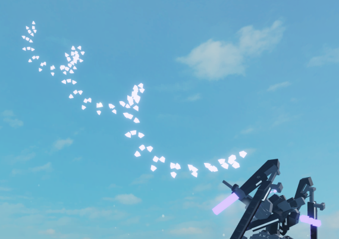

Blades
Blades and their design influence how much damage your shredder can output. Blades have a few factors for being good, mainly Spacing and CE. This page has information on many things related to blades.
Blade Design
Blade design is the general design of a shredders blade, the pattern and logic. The principles of blade design are density, efficiency, and area coverage. Following these will produce a better blade.
Modern Spaced CS

This blade design uses the invincibility of compressor blocks and outwards compression setting to make a vertically and horizontally spaced blade. This is the best general design of blade for now, preferred for its high area coverage and block efficiency.
There are a few variants, most simply cut down the sides of the blade shape from four to three or two. Two sides, flat blades, are considered to not actually cover as much area and also require a lot of speed to actually rotate properly (30pi).
Sinusoid

This blade uses a repeated pattern of angles to create a spinning sinusoid. These are spaced well, having a very efficient use of cutters. However, spaced cs is typically much better.
A mistake people make when using this type of blade is creating a helix, stacking the pattern to make two sinusoids. This uses way too many blocks and can make the blade dense enough to be pingspiked.
Density
Efficiency
Area Coverage
Cutter Rules
Cutter blocks follow a set of rules, both scripted and naturally occouring.
Minimum Distance
Cutters have a minimum distance rule, this prevents redundant cutters and side by side cutters.
Maximum Speed
Cutters have limits to the speed where they can still function. The first cause of this is ping, this is from the serverside and clientside hitbox being more and more offset the higher the speed is. This, combined with serverside damage checks for cutters, makes ping heavily determine the effectiveness of cutters.
The second cause is a speed limit, cutters eventually stop working at thousands of SPS.
Damage per Second
When a cutter deals damage, it deactivates for 0.1 seconds. This prevents cutters from just dealing infinite damage and instantly pingspiking.
Pingspiking
When your cutters interact with an excessive amount of blocks, affected by density of blade and target, your ping can spike up to ~200,000 milliseconds or more. This causes you to freeze on the server but not your client. You can move but your hitbox will stay in one place on the server which allows for people to kill your shredder.
CE/Demean
Cutter Enhancement/Demean is a method of boosting the damage of cutters in a blade. This is done through a calculated MotorSpeed that aligns a specific amount of motor rotation with ingame ticks. The exact rotation needed for a blade is calculated through a few steps, but the end result is between usually 3 different numbers.
A full MotorRevolution per second is 360° ÷ 1T, where T=Seconds. This is achieved by setting MotorSpeed to 2π.
Roblox operates with the roblox.com/docs/physics engine running at a maximum of 60hz (60 hertz = a frequency of 60 cycles per second where something can happen.) making the optimal fps, FPS ≥ 60. This also increases the value of Optimisation
To find the correct MotorSpeed for a 4 sided blade, you must perform this equation. (2π×60)÷(360÷45), meaning CE is 15π or 47.124.
To find the MotorSpeed for a 3 sided "tri blade", you must do (2π×60)÷(360÷45). The answer, 20π, cannot fit within a singular motor. The MotorSpeed limit is 50, 20π is ~62.832. The fix to this is 2x Demean, which stacks the speed of two motors. So the correct value for the motors is divided by two to fit within the 2 motors, 31.416.
The optimal MotorTorque value for blades, tested over 1000 times with CE, is 0.63.
The blade must spin backwards to have maximum effect, as it pulls. Spinning forwards will make the blade push targets away from itself.
In summary: